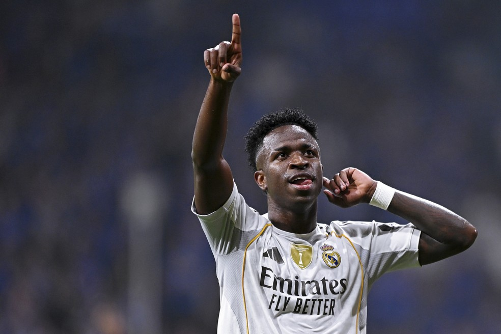

Fim da novela! Real Madrid renova com Vinícius Júnior até 2032 e deixa Arsenal de mãos vazias

📸: Globo Esporte
Fim da novela! Real Madrid renova com Vinícius Júnior até 2032 e deixa Arsenal de mãos vazias
Depois de meses de negociações, rumores e pressão por todos os lados, Vinícius Júnior decidiu continuar no Real Madrid. O camisa 7 renovou seu contrato em 6 de agosto de 2026, e agora tem vínculo com o clube até 2032.
Foram meses de incertezas até a decisão final. De um lado, o Real Madrid não queria perder um dos seus principais jogadores. Do outro, Vinícius buscava uma valorização compatível com seu protagonismo. E, no meio dessa disputa, surgiu o interesse do Arsenal.
A ascensão ao protagonismo
Após a saída de Karim Benzema, a história do Real Madrid tomou novos rumos em 2023. Fizeram contratações pontuais, porém ótimas para o clube, chegaram jogadores como Arda Guler, Joselu e Jude Bellingham. E renovaram contratos de alguns dos seus jovens atletas, entre eles, estava Vinícius.
Com a saída de Karim Benzema, o brasileiro assumiu ainda mais responsabilidade, o clube entregou a camisa mais pesada do clube. E respondeu dentro de campo: teve uma temporada de enorme protagonismo e foi fundamental nas conquistas da Supercopa da Espanha, La Liga e Liga dos Campeões. E terminando assim, a temporada 23/24 com status de Melhor Jogador do Mundo.
A partir da temporada 2024/25, o clube iniciou as conversas para uma nova renovação. Mas as negociações rapidamente ganharam novos obstáculos.
A chegada de Mbappé muda o cenário
Na mesma temporada, Kylian Mbappé chegou ao Real Madrid sem custos de transferência e assumiu o maior salário do elenco.
Vinícius, que vivia o auge de sua carreira e carregava o peso de ser o melhor do mundo naquele momento, queria uma valorização salarial.
As conversas se arrastaram por meses. Até que veio um problema inesperado: o rendimento do brasileiro caiu, e o Real Madrid decidiu travar as negociações.
Entre o início de 2025 e a temporada 2026/27, o clube voltou a tentar um acordo em outras duas oportunidades. Em ambas, porém, pequenos detalhes impediram o acordo.
O principal ponto de discordância continuava sendo financeiro. Vinícius e seus empresários entendiam que o jogador deveria receber um bônus e uma remuneração maiores do que o Real Madrid estava disposto a oferecer.
E assim, as negociações ficaram paradas até maio, justamente no início da Copa do Mundo.
Copa do Mundo e pressão por todos os lados
Enquanto defendia a Seleção Brasileira, Vinícius também carregava uma preocupação fora de campo: seu futuro no Real Madrid.
Depois da eliminação do Brasil e do período de férias, os rumores ganharam força. O Arsenal passou a aparecer como um possível destino para o brasileiro, e as especulações começaram a ficar cada vez mais intensas.
Foi então que Florentino Pérez entrou em cena.
O Real Madrid teria colocado Vinícius diante de uma decisão: renovar e continuar no clube ou abrir caminho para uma possível saída.
O motivo era simples: O contrato assinado em outubro de 2023, terminaria em junho de 2027. Caso não houvesse renovação durante a temporada, Vinícius poderia assinar um pré-contrato a partir de janeiro e deixar o Real Madrid de graça ao fim do contrato de graça. E então, Florentino deixou a decisão nas mãos de Vini.
O fim da novela
Depois de inúmeras conversas com seus empresários, dirigentes, comissão técnica e o próprio clube, Vinícius Júnior tomou sua decisão.
Ele fica.
O Real Madrid renovou o contrato do camisa 7 até 2032, encerrando de vez a novela que se arrastava há anos.
Inicialmente, a intenção do clube era renovar até 2030. Porém, para chegar mais perto das exigências financeiras de Vinícius, o vínculo acabou sendo estendido por mais dois anos.
Os valores oficiais ainda não foram totalmente divulgados, mas a expectativa é de que o brasileiro receba cerca de €25 milhões por temporada ou até mais, entrando na lista dos jogadores mais bem pagos do futebol mundial.
Vinícius fica. Arsenal perde.
O interesse do Arsenal, que ganhou força durante os últimos meses, não será suficiente para tirar o brasileiro de Madri. O clube queria o jogador para ser a cara do projeto que estão construindo a anos.
Mas no fim, Vinícius Júnior continuará vestindo a camisa 7 do Real Madrid.
Hoje, o brasileiro já ocupa um lugar especial na história recente do clube. Ele foi um dos grandes protagonistas de uma das eras mais vitoriosas do Real Madrid, justamente em um período complicado pós-saída do Cristiano Ronaldo, assumiu a responsabilidade deixada por grandes ídolos e transformou a camisa 7 em sua própria identidade dentro do clube.
Vencedor de duas Champions, três Mundiais, três La Liga. Mais de 200 participações em gols em 375 jogos pelo clube. Segundo capitão e ídolo de uma geração.
A novela finalmente chegou ao fim.
Vinícius fica no Real Madrid. Até 2032. E a história de resiliência, protagonismo e conquistas continua.
@Gab.bsp